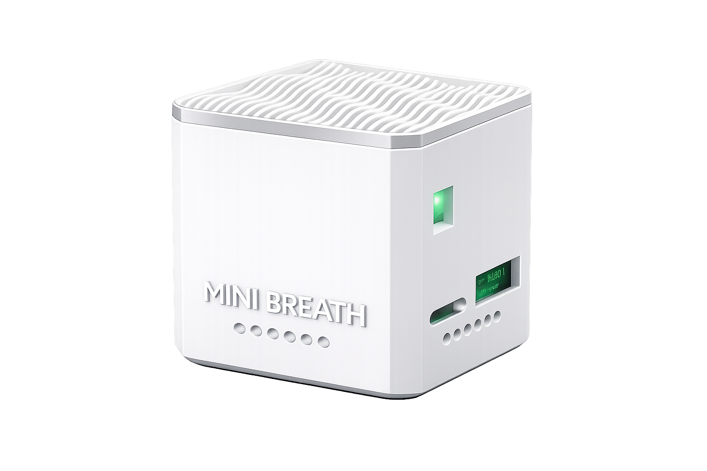
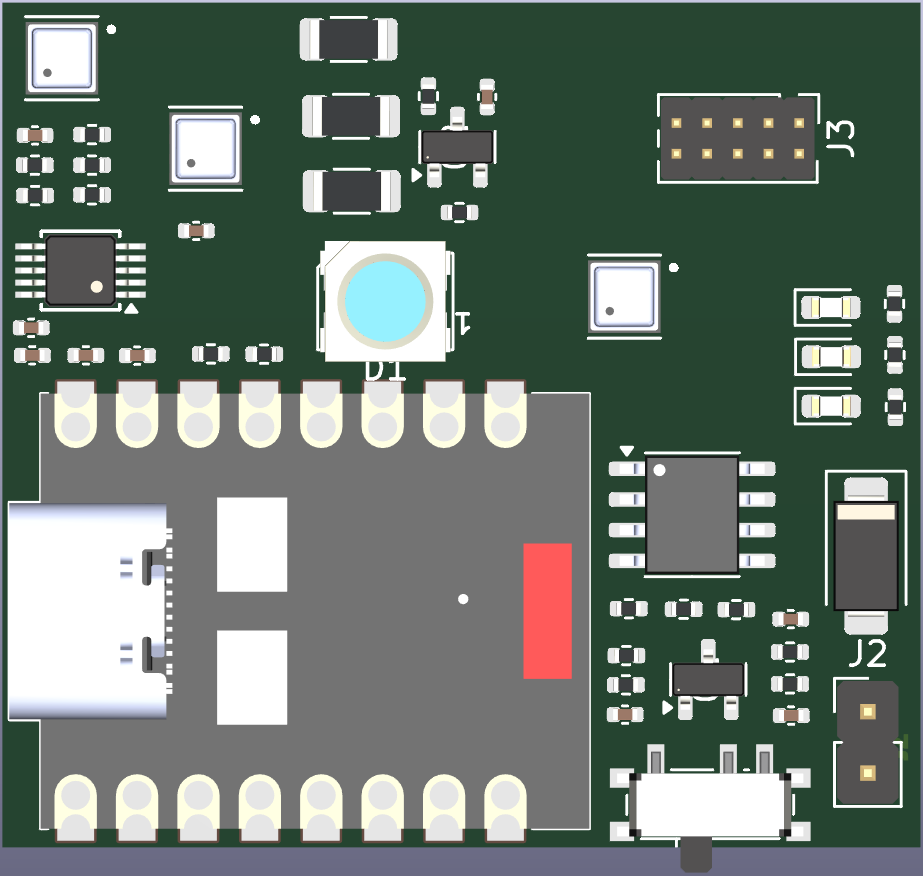
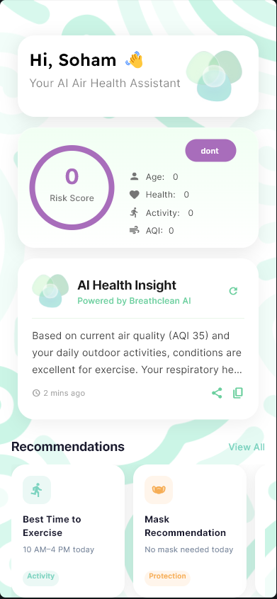

Know the Air You Breathe
with MiniBreath
MiniBreath by BreathClean is a compact, high-precision environmental monitoring device that continuously analyzes invisible threats. It doesn't just tell you what's wrong—it tells you exactly what to do. Real-time air quality intelligence, delivered directly to your smartphone.

Meet MiniBreath
MiniBreath is a portable air quality monitoring device designed to continuously analyze your surroundings. It provides a complete picture of air quality by measuring 7 critical parameters simultaneously.
- ✔️ Compact, portable, and easy to use
- ✔️ Designed for continuous 24/7 monitoring
- ✔️ Built for both indoor and outdoor environments
- ✔️ Convenient wireless charging base included
4 Sensors & PCB Design
Precision environmental monitoring is powered by a custom circuit board with proper sensor placement and airflow design for efficient sampling, reliable wireless communication, and low power consumption.

- ZMOD4410AI1V – Indoor Gas (VOCs)
- ZMOD4510AI1V – Outdoor Pollution (Ozone)
- HS4001 – Temp & Humidity
- PMSA003 – Particulate Matter
Total Clarity.
Zero Guesswork.
BreathClean runs 17 localized AI modules to give you plain English answers, not just confusing charts.
BreathScore™
One number. Total clarity.
A live 0–100 score that fuses four global air quality standards (EPA, WHO, CAQI, and CPCB) into a single honest number. Updated every 10 seconds.
Smart Verdict Engine
Plain English. Every 10 seconds.
Not graphs. Just one sentence telling you what to do right now. Over 40 distinct real-world messages guiding your actions.
Source Fingerprinting
Not "air is bad." But why it's bad.
BreathClean analyses the chemical signature of your air and names the culprit directly.
Dual Spike Detection
Catches it in seconds.
Instant threshold spikes fire the moment pollutants cross danger lines. Delta spikes detect rapid rises even at moderate levels.
Z-Score Anomaly Detection
Statistically impossible to fool.
Maintains a 60-minute rolling history and flags readings that are statistically unusual for your specific environment.
Synergy Risk Engine
Combining threats.
6 dangerous combinations monitored simultaneously. E.g., PM2.5 + NO₂ traffic mix is flagged as significantly more harmful than either alone.
Adapts to Your Life
The device learns your habits, schedules, and specific environment to give advice that actually makes sense for you.
Ventilation Opportunity
Scored 0–100 every 10 seconds. Weighs indoor vs outdoor air, time of day, and traffic to tell you exactly when opening a window helps.
Cooking Auto-Detect
Knows you're cooking before you tell it. Detects chemical signatures and automatically switches to cooking mode to prevent false alarms.
Circadian Advisor
72 combinations of time-of-day logic. It knows it's 11 PM and CO₂ is building, so it tells you to crack the bedroom window before sleep.
Occupancy Detection
CO₂ rise patterns reveal human presence. When people are detected, ventilation alerts become more urgent. Completely private.
Personal Baselines
Calibrated to your home, not a lab. Over 2 hours, it learns your normal patterns to set appropriately different safety thresholds.
Daily Exposure Memory
Your health doesn't reset between readings. Accumulates PM2.5 exposure across the entire day against WHO safety limits.
Clearing Advisory
After a spike clears, it tracks particle settling in real time and estimates exactly how long until your air is normal.
Sleep & Mold Intel
Real-time mold risk based on temp/humidity. Sleep quality scoring based on CO₂ so you wake up understanding your rest.
System Flow
A continuous pipeline converting raw environmental data into actionable intelligence.
Fine Dust, Gases, Ozone.
4 Precision Sensors run 24/7.
17 Modules analyze data locally.
Live app updates & LED feedback.

Intelligent Air Guardian
in Your Pocket
The companion app transforms complex environmental data into meaningful health intelligence, designed for step-by-step user understanding.
Real-Time Monitoring
- Displays AQI clearly
- Shows all key parameters live
- Color indicators (Good / Moderate / Poor)
Parameters Tracked
- PM1.0, PM2.5, PM10
- Temperature
- Humidity
- VOC levels
- Ozone
Trends & History
- Tracks data over time
- Shows daily and weekly patterns
- Calculates personalized health score
- Calculates breathable air percentage
Smart Alerts
- Notifies when air quality drops
- Helps users take action quickly
- Delivers actionable respiratory advice
The 4-Layer LED Engine
Speaks fluently. Even at 3 AM. A sophisticated multi-layered lighting system communicates air status instantly without needing your phone.
1. Breathing Glow
Breathes in and out like lungs. Speed equals CO₂ level. Color equals BreathScore.
2. Cause Heartbeat
A lub-dub pulse every 3 breath cycles. Color tells you the culprit: Teal (CO₂), Amber-Red (Particles), Violet (Ozone), Magenta (VOCs).
3. Spike Flash
Three sharp white flashes the instant a spike is detected. Impossible to miss.
4. Hazardous Throb
Fast crimson pulse at risk level 6. This is the leave-the-room signal. Overrides everything.
Health Profiles
Stricter safety parameters for those who need it most. Switch profiles instantly in the app.
- Normal: Standard thresholds
- Elderly: 30% tighter
- Child: 28% tighter
- Pregnant: 32% tighter
- Asthma: 35% tighter
Complete Air Intelligence.
Absolute Privacy. Always.
No Wi-Fi. No cloud. No account.
All 17 AI modules run entirely on-device. Your air quality data never leaves your home. No subscription. No fees. Ever.
GIVE US YOUR FEEDBACK
Share opinions, rate the device, and suggest improvements. We really appreciate your time and help in making BreathClean better.